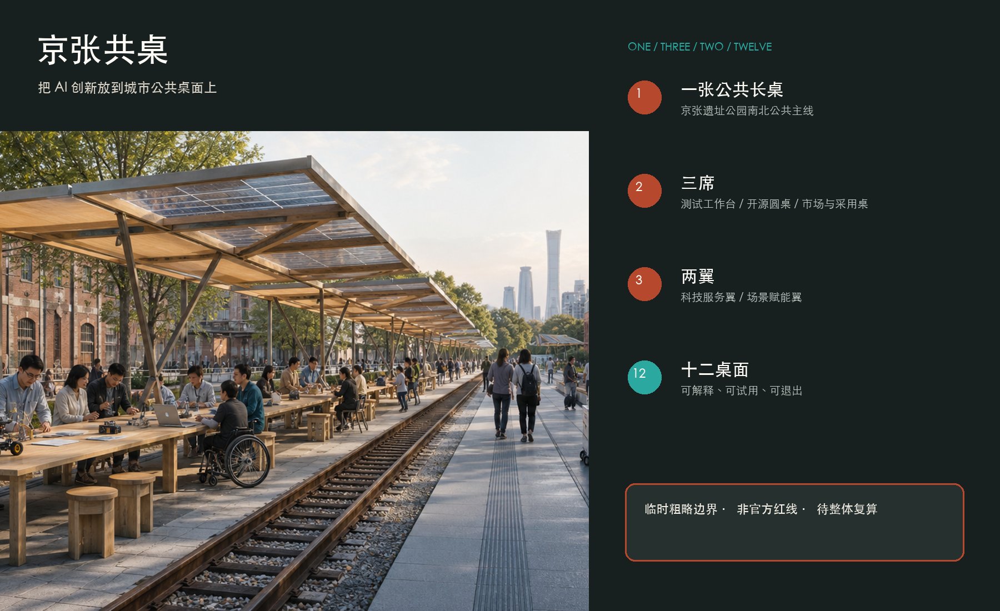
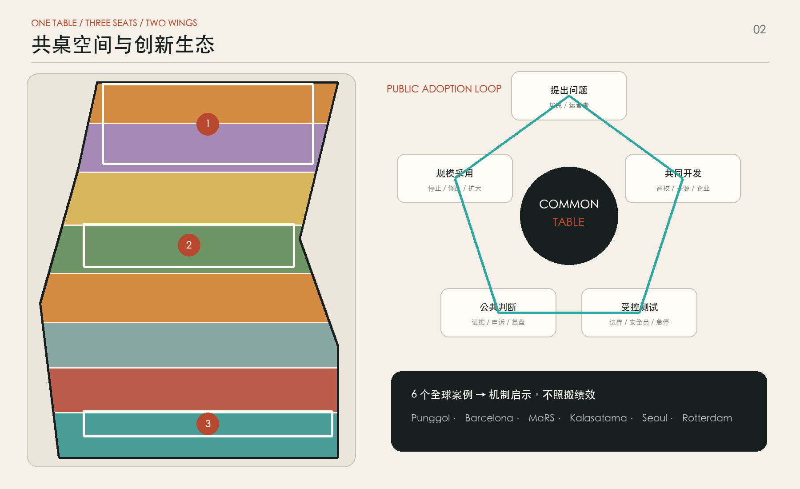
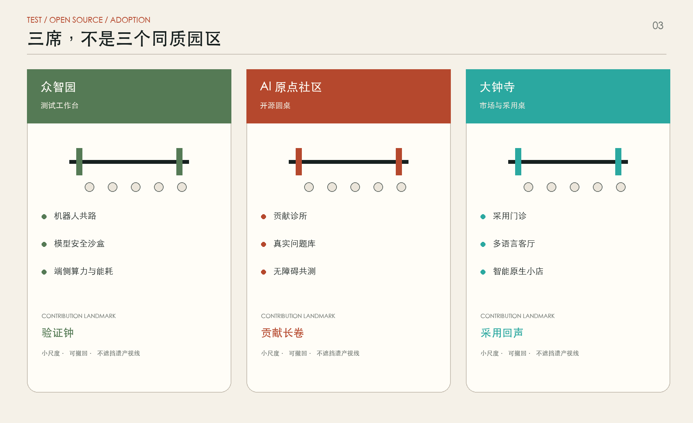
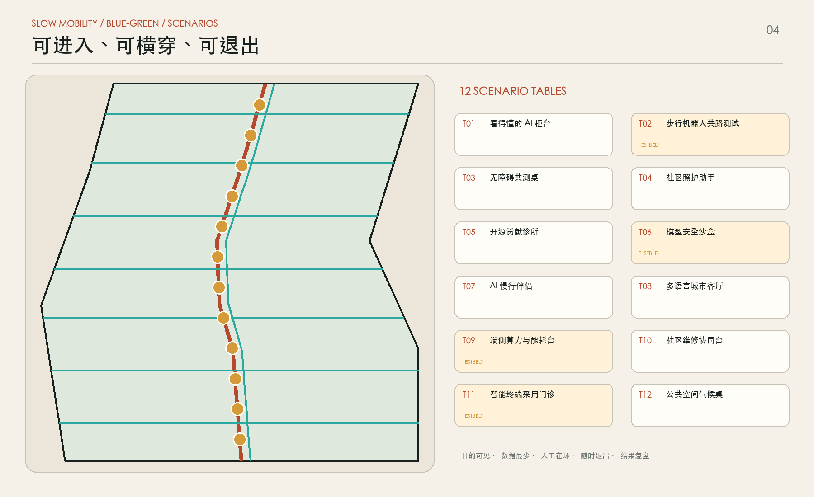
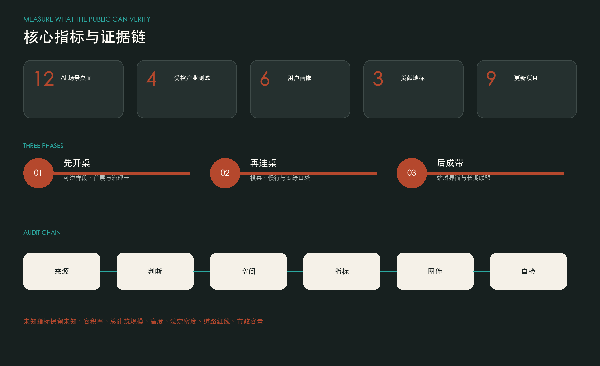

OVERVIEW / 总览地图
一桌 · 三席 · 两翼 · 十二桌面
一张连续公共长桌连接众智园测试工作台、AI 原点开源圆桌和大钟寺市场与采用桌；科技服务翼与场景赋能翼共同形成公共采用闭环。
THREE-LEVEL SCOPE / 三层范围



KEY AREAS / 重点区域
证据先于奇观
每个场景都公开目的、最少数据、人工责任、退出方式和复盘日期；缺少官方条件的指标保持未知。
LAND USE / 用地分区
MOBILITY / 交通慢行

BLUE-GREEN PUBLIC SPACE / 蓝绿公共空间
连续绿荫桌布、三处雨洪口袋与十二个可停留节点。
BUILDINGS / 建筑
建筑图层是验证首层接口与空间容量的概念原型，不是现状调查或拆除清单。
PROJECTS / 更新项目
九个项目：先开桌、再连桌、后成带

AI SCENARIOS / AI 场景
- T01看得懂的 AI 柜台
- T02步行机器人共路测试 · TESTBED
- T03无障碍共测桌
- T04社区照护助手
- T05开源贡献诊所
- T06模型安全沙盒 · TESTBED
- T07AI 慢行伴侣
- T08多语言城市客厅
- T09端侧算力与能耗台 · TESTBED
- T10社区维修协同台
- T11智能终端采用门诊 · TESTBED
- T12公共空间气候桌
METRICS / 核心指标
TASK COVERAGE / 任务覆盖
17 + 6
公告 17 项必选任务与 Agent 六项任务均映射到章节、图层、指标、图纸和自检。
SELF-CHECK / 自检状态
4 GATES
确定性校验、空间复核、视觉包装与专业证据必须同时通过。
来源与版权
项目事实来自官方公告与仓库场地包；六个全球案例只支持机制比较，不复制任何第三方图片、Logo、字体或页面代码。
假设与复算触发
官方边界、控规、现状测绘、交通、市政、文保和生态资料仍待补齐。本方案是可供专业团队深化的概念建议，不是审定规划。
来源 · 假设
临时粗略边界，不是官方红线或审批依据；官方数据到位后须对全部图层和指标整体复算。